PURT · one figure-eight lap · Betaflight / CogniPilot
Loading the shared course…
Updated benchmark: a shared offboard position controller sends attitude and thrust commands to Betaflight ANGLE and CogniPilot ATTITUDE modes, with rate feed-forward added offboard as a tilt lead (ω/K). Onboard control equations remain upstream; both inherit gains selected by the earlier native step-response rule; current ARM tuning still requires qualification. Emulator I/O patches remain. The 40-second target is for commissioning; it is not a fastest-setting result.
Two replays completed; aircraft validation still fails. Betaflight TROPIC RT1064 ARM firmware ran in FastDyn/QEMU against the Rumoca plant. Only the host motor/thrust model changed; onboard controller equations and replayed commands stayed the same. PID period readback remained 156 µs.
LOG00012 supplied the fit. Parameters were frozen before evaluating LOG00013. Logged motor commands, battery voltage, RPM telemetry and acceleration constrain an estimated motor map and thrust-to-mass ratio. They do not identify the actual vehicle mass or inertia.
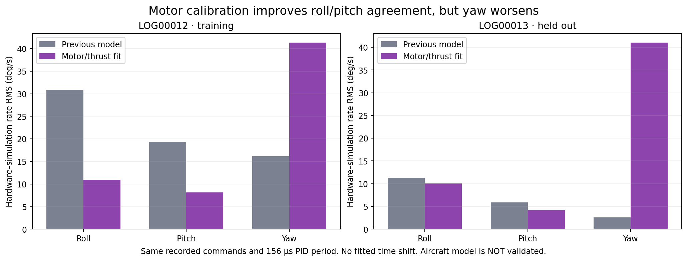
| Recording | Roll RMS °/s Before → after | Pitch RMS °/s Before → after | Yaw RMS °/s Before → after |
|---|---|---|---|
| LOG00012 | 30.84 → 10.95 | 19.33 → 8.11 | 16.18 → 41.29 |
| LOG00013 | 11.26 → 10.02 | 5.88 → 4.18 | 2.61 → 40.98 |
Important failure: simulated peak altitude reaches 167 m (LOG00012) and 186 m (LOG00013), outside PURT. These are unconstrained diagnostic command replays, not successful PURT flights. No hardware position reference is available. Do not use these fits to claim flight readiness or a faster lap.
Repository baseline: omegaMax 1,100 rad/s, motor time constants 12.5/25 ms, thrust coefficient 8.54858×10⁻⁶. Fit: target speed = 1,783.27 × (recorded voltage / 16 V) × normalized command^0.86226 rad/s; effective time constants 33.75/36.85 ms. Thrust/mass coefficient = 3.89792×10⁻⁶. Effective constants include telemetry/filter effects. Conversion assumes the configured 14 motor poles are correct. The normalization speed 3,566.54 rad/s is a numerical scale, not a measured maximum speed.
A separate motor-only replay using recorded motor outputs reduces held-out motor-speed RMS from 360.53 to 3.83 rad/s. That component check is not closed-loop flight accuracy. In the full ARM replay, the firmware generates its own motor outputs; recorded gyro and RPM are not injected as plant feedback. Battery voltage is replayed, not physically modeled.
Retained assumptions: 2 kg reference mass, default inertia and 0.25 m arms; only thrust/mass was estimated. Missing: actual all-up mass; motor positions; motor model/KV/pole count; propeller diameter/pitch/blade count; ESC firmware and settings; motor order/spin directions; and a controller configuration export. Initial pose/velocity and synchronized mocap are needed for trajectory validation. RPM feedback/filtering and the original radio packet timing remain unmatched. Logged firmware c0b17f7f1 differs from the available replay checkout.
Sources: CogniPilot/modelica_models, Vehicles/Rdd2/Plant.mo and Vehicles/Templates/QuadrotorPlant.mo; hardware LOG00012/13 Blackbox headers and samples. Same plant binary SHA-256 prefix 284cced3ceec; same replay firmware prefix fcf2fe72cad1. Parameters are initialization overrides, not a new measured aircraft model. 56 runner tests passed, 2 ignored. One held-out attempt stopped on full VM disk; preserved and rerun after clearing download cache.
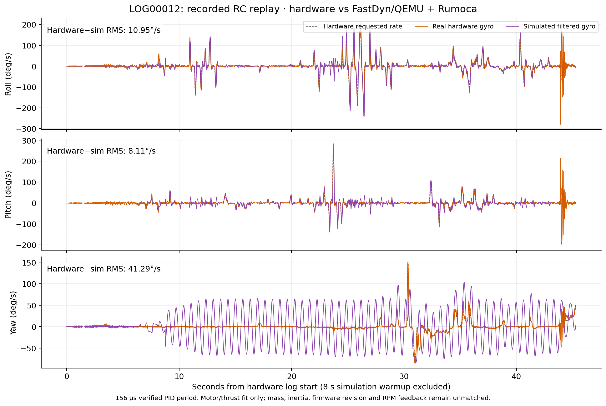
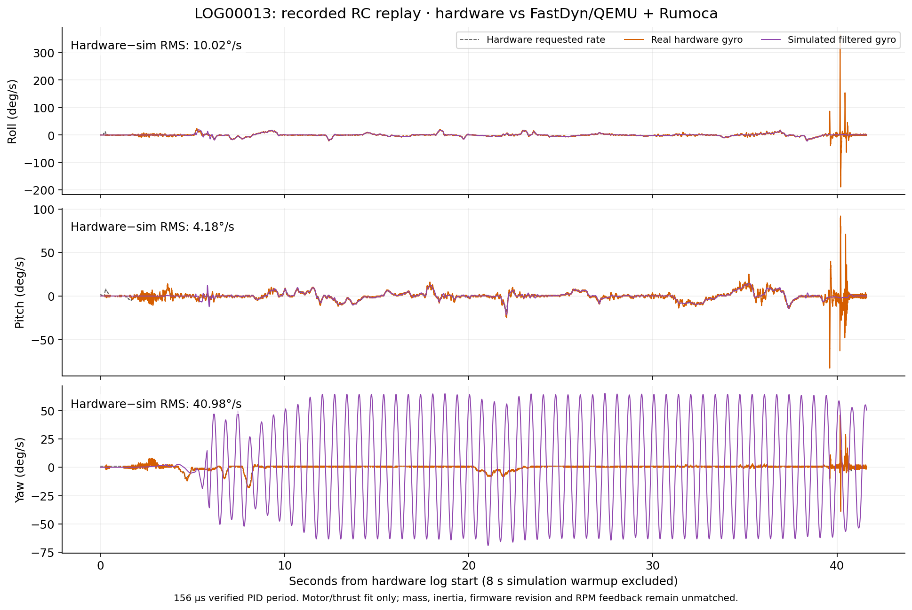
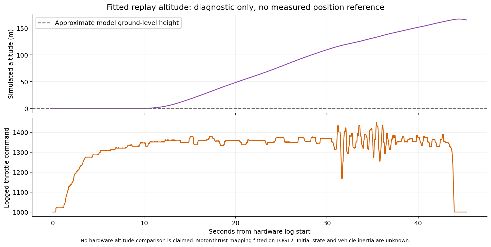
Commands reproduced closely; the current plant does not reproduce the real flight. Two hardware recordings, LOG00012 and LOG00013, were replayed through Betaflight TROPIC RT1064 ARM firmware in FastDyn/QEMU with the existing Rumoca plant. Both corrected replays completed and armed, but remained near the model floor. These are completed replay experiments, not successful free-flight validation or verified landings.
Recorded RC commands → reconstructed receiver channels → Betaflight ARM rate controller → simulated motor commands → Rumoca dynamics → simulated gyro feedback. The hardware gyro is used only for comparison; it is not injected to force the model to match.
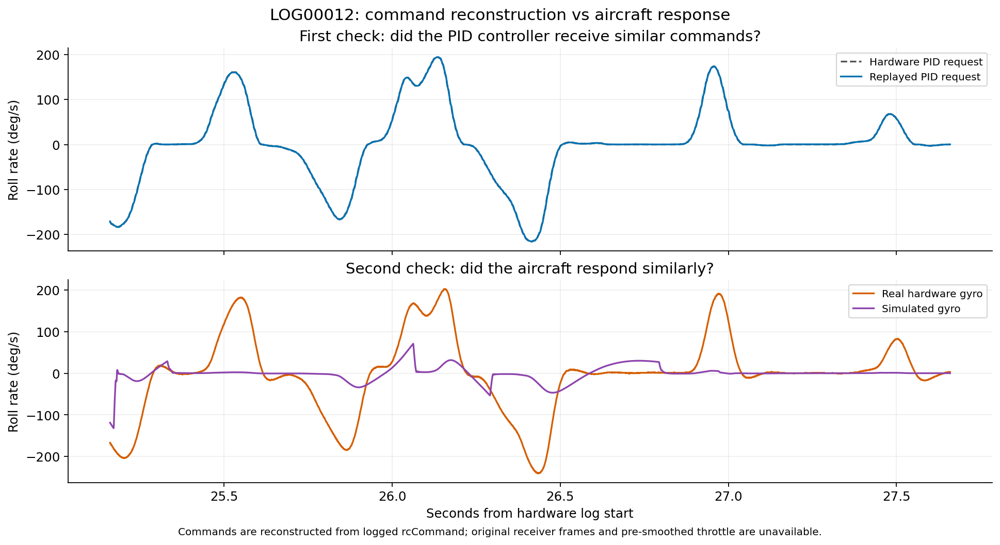
| Recording | Eligible paired samples | PID-request RMS difference (°/s) | Gyro-rate RMS difference (°/s) | Maximum simulated altitude |
|---|---|---|---|---|
| LOG00012 | 67,778 | 0.41 / 0.26 / 0.31 | 30.84 / 19.33 / 16.18 | 0.183 m |
| LOG00013 | 62,780 | 0.32 / 0.27 / 0.36 | 11.26 / 5.88 / 2.61 | 0.120 m |
Smaller means closer agreement, not faster control. RMS differences compare the real and simulated signals at corresponding recording times; these are not the previous command-tracking RMS values. Different maneuvers make the two recordings' RMS values unsuitable for ranking accuracy. No time-shift fitting or model tuning was used to improve agreement.
The firmware reads back a 156 µs PID period (~6.41 kHz nominal), matching the hardware log header. Roll/Pitch/Yaw P-I-D gains were configured as 45/80/30, 47/84/34, 45/80/0; feed-forward gains as 120/125/120. ACTUAL rate curves and many gyro/D-term filter values came from the logs. Reconstructed PID requests differ by only 0.26–0.41°/s RMS across these two runs.
The Rumoca plant still uses its 2.0 kg default mass; the real drone's mass, inertia, propellers, motor/ESC response, and initial state are unknown. Hardware firmware revision c0b17f7f1 is unavailable in the current simulation checkout. The replay uses a virtual DShot600 codec without bidirectional RPM feedback; hardware logs enable bidirectional DShot. Original RF frame times and throttle before smoothing are not recorded. RC smoothing was fixed to the logged 93 Hz active cutoff; original adaptive initialization is not reproduced. These prevent calling this a fully matched hardware model.
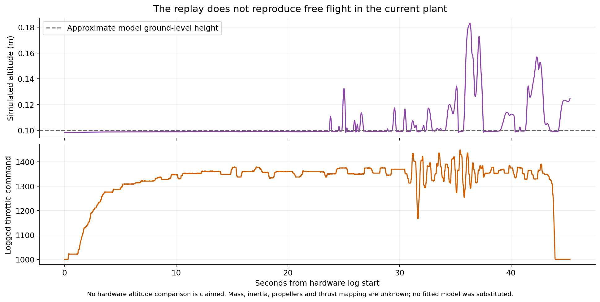
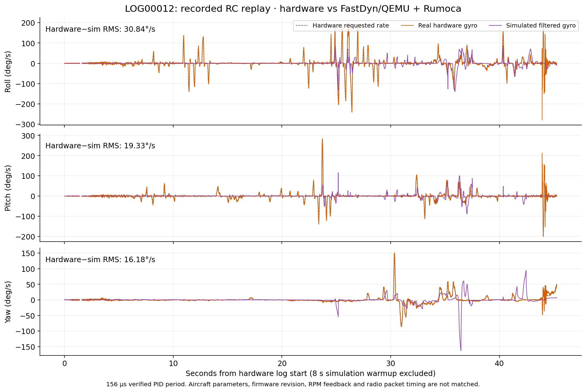
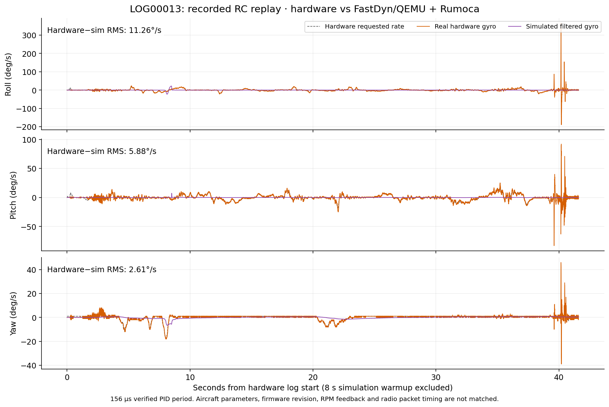
Fixed hardware-only timer helpers being compiled unused under FastDyn, enabled the existing MSP CLI provisioning interface, and built a separate simulation-only ELF with virtual gyro rate 6400 Hz (integer 156 µs period). Controller equations were not changed. Command-mapping unit test passed; both runs checked the PID-period readback. The first LOG00012 attempt traversed the input but stayed disarmed because its throttle minimum equaled min_check. It was retained; corrected inverse throttle mapping permits normal arming without disabling arming checks.
Inputs use latest-sample hold with reconstructed radio updates. Each plotted pair is associated with its source sample; scheduling quantization is at most 156 µs. LOG00012 pairs 73,199 of 73,201 source rows, LOG00013 pairs 67,622 of 67,625: a few closely spaced source samples fall within one simulation tick. No rows are silently claimed replayed. RMS uses the hardware gate (armed, no ANGLE/HORIZON, valid receiver, no failsafe, throttle >15%) and simulated armed state. Long source logging gaps remain a limitation; LOG00012 contains a 190.02 ms gap. Full traces are plotted, with gaps broken visually.
Coverage: all 13 hardware logs remain in the overview below; only these two have been command-replayed. They expose a model mismatch that should be resolved before scaling up the campaign. Raw input, failed attempt, replay traces, settings, hashes, build logs and reproduction patch are retained locally. Only plots and explanations are published here.
Next validation requirement: identify the physical vehicle and recover its complete Betaflight configuration, then match mass/inertia/thrust mapping, firmware revision and RPM/sensor behavior. Repeating the same commands after that will test whether the model predicts the real drone. All 13 hardware logs and previous simulation comparison ↓
Progress: real free-flight Blackbox measurements now accompany the ARM simulation results. All 13 recordings were decoded and summarized. Detailed examples use LOG00012 (45.27 s), selected for substantial commands on all three axes. These are manual Acro flights, not recorded figure-eight position tests. Analysis date is not a verified flight date.
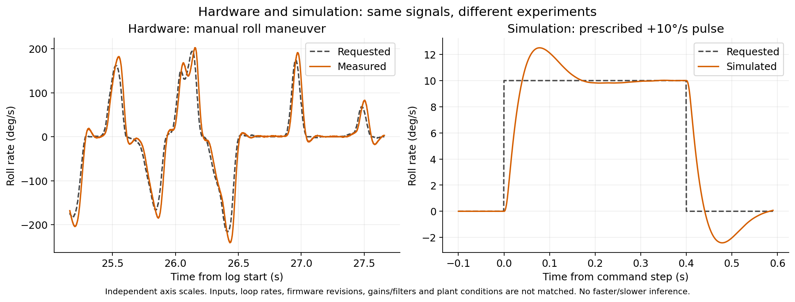
| Measurement / setup | Physical Betaflight · LOG00012 | Betaflight FastDyn/QEMU + Rumoca |
|---|---|---|
| Target | MR_VMU_TROPIC / MIMXRT1064, as logged | TROPIC RT1064 ARM firmware |
| Input | Manual changing roll, pitch and yaw rate commands | +10°/s roll pulse held for 0.4 s; noise-free diagnostic |
| Loop timing | Header: 156 µs, PID divisor 1 (~6.41 kHz nominal) | 625 µs PID readback; 1,600 motor writes and gyro reads per simulated second |
| Recorded sample interval | 624 µs median; logging every fourth loop. Not execution jitter. | Simulation timestamps; not physical CPU timing |
| Rate RMS, roll / pitch / yaw | 9.06 / 6.21 / 2.19 °/s, eligible samples | No matched manual-command trial; no paired RMS claim |
| 10–90% rise / 5% settling | Not established: manual inputs are not held steps | 26.9 / 147.5 ms, within the 0.4 s hold |
| Step overshoot | No matched step metric | 25.1% |
Interpretation: hardware follows the requested rate with transient lag and peak excursions; the controlled simulation pulse rises rapidly and overshoots before settling. The numbers do not prove either is faster: command magnitude, firmware, loop rates, filters/gains and physical vehicle parameters are not matched. The recorded-command replay above now tests command reconstruction; matching the actual aircraft parameters and firmware settings remains necessary.
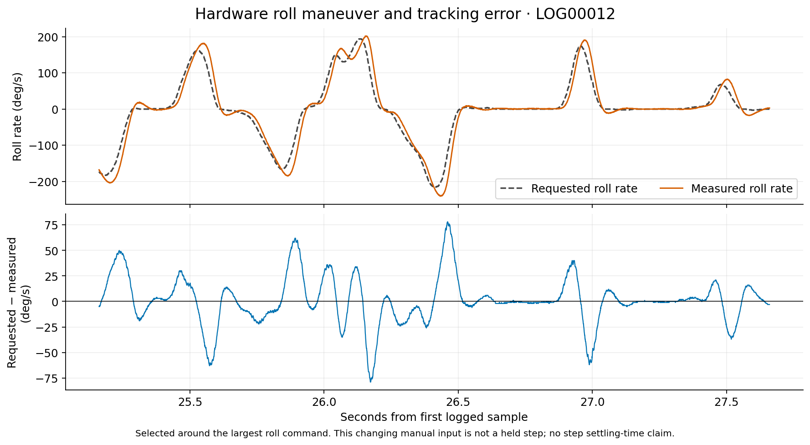
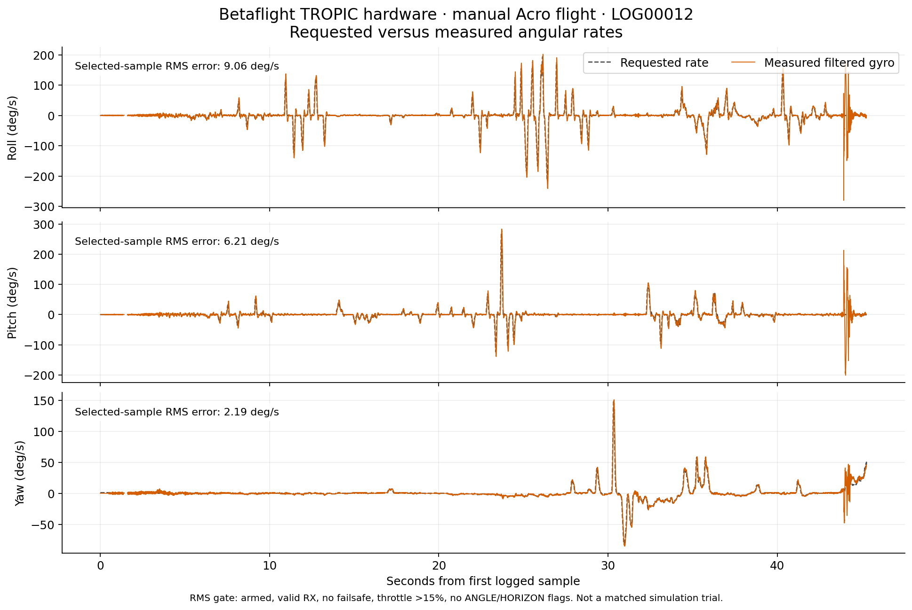
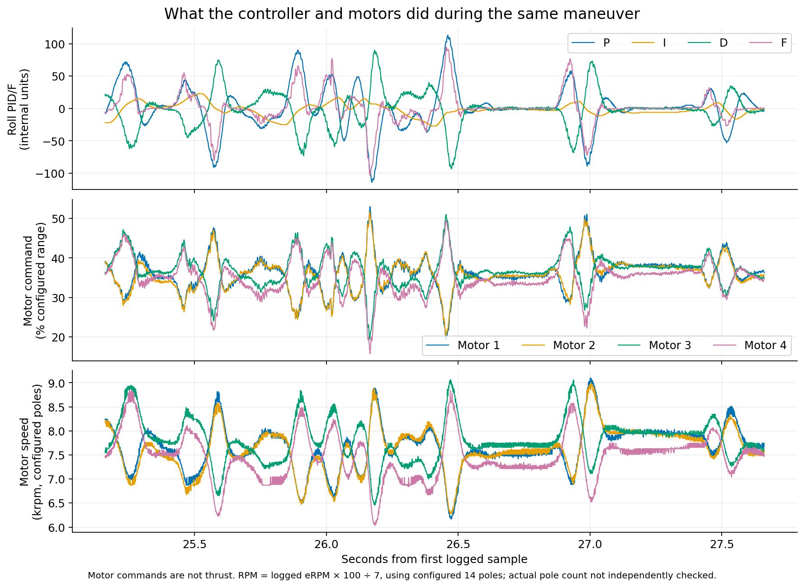
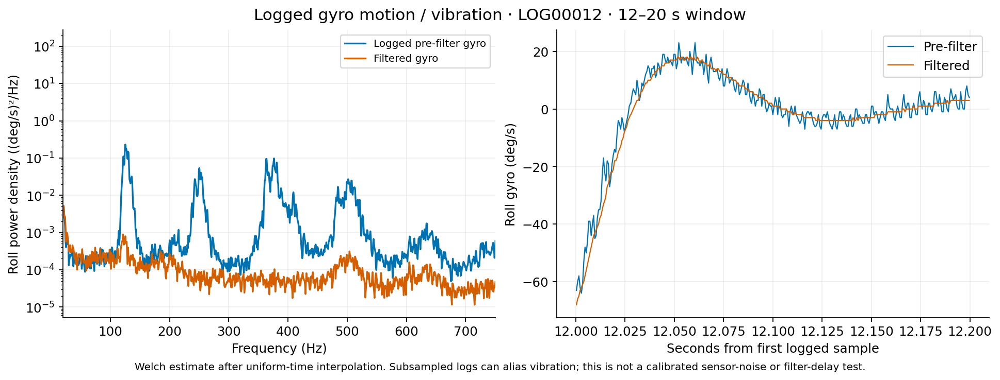
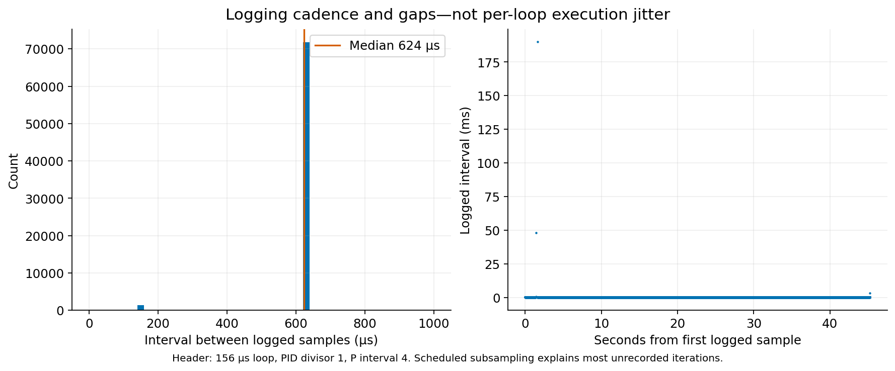
RMS gate: armed, no ANGLE/HORIZON flags, valid RX channels, no failsafe, throttle >15%. This gate is not independent proof of being airborne. No eligible samples means RMS is unavailable—not zero. Logs are not pooled because maneuvers and flight phases differ.
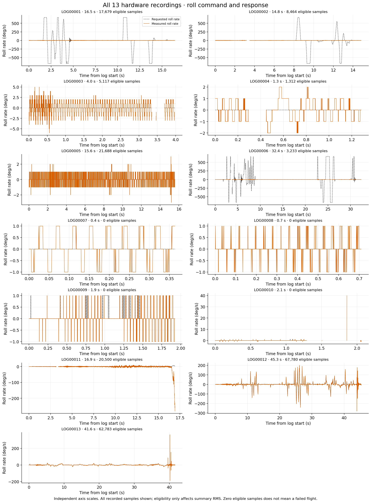
All 13 logs were decoded and summarized locally. Nine contain samples meeting the RMS filter; four contain none and are not assigned zero error. LOG00012 supplies the detailed examples. RMS is sqrt(mean((requested rate − filtered gyro rate)²)), without lag alignment.
Hardware header: Betaflight 2026.12.0-alpha, revision c0b17f7f1; NXPI MR_VMU_TROPIC / MIMXRT1064. The decoder required a compatibility fix recognizing the Betaflight firmware-type label for correct gyro units. Source files, per-log statistics and the plotted data excerpt remain local. Only plots and these explanations are published here.
The original commissioning baselines are back in the main playback controls: one 10 × 10 m lap at 2 m, plus recorded takeoff and landing. These retain their original firmware, motor protocols and timing; they are not the new rate-matched step tests.
View selected flight replay ↓ · Earlier native 40 s recordings ↓
Rebuilt TROPIC RT1064 firmware in FastDyn/QEMU, using the same Rumoca plant and matched virtual DShot frame encoding and a verified 1,600 Hz sensor/control schedule: roll attitude, Acro body-rate, and east-position steps. Blue: CogniPilot. Orange: Betaflight. Dashed lines: requested commands.
Loading recorded step-test outcomes…
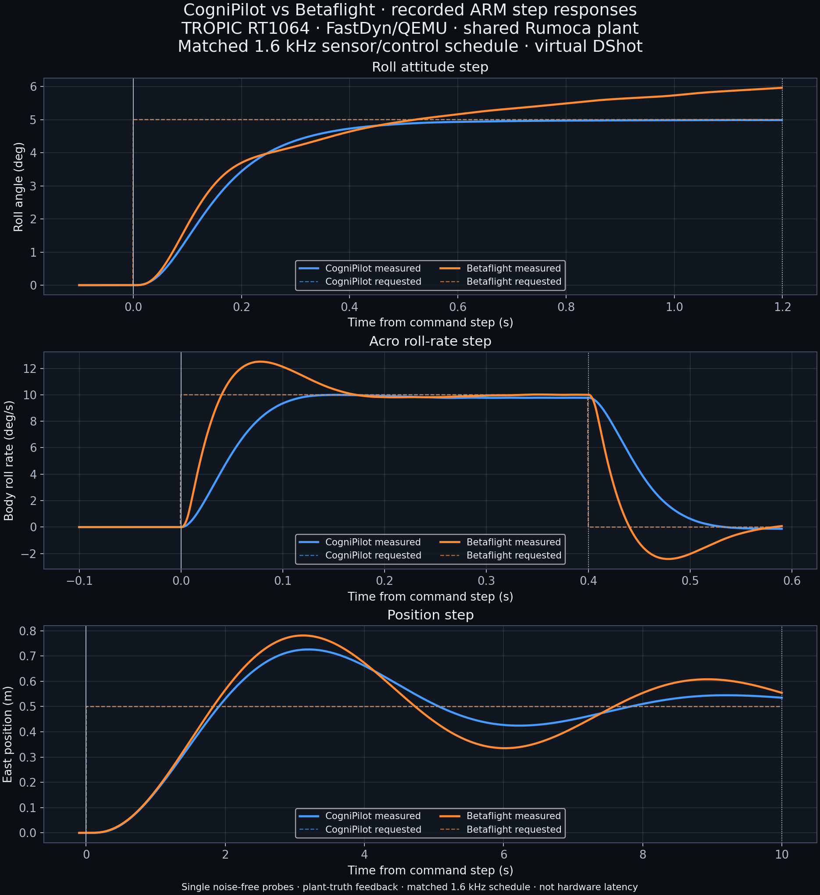
| Test / stack | 10–90% rise | 5% settling | Overshoot | Flight outcome |
|---|
Single noise-free positive-axis probes, existing gains, offboard tilt lead disabled. These measure closed-loop motion response, not CPU or physical driver latency. Both now use virtual DShot frames with telemetry off. Both use a 625 µs sensor/control period (1,600 Hz), with latest radio commands delivered on common sensor boundaries. Both simulation builds explicitly match estimator and attitude-controller release rates too, including Acro mode. Firmware counters and raw motor traces verify the rates. Sensor representation, filters and internal receiver processing still differ; electrical DShot timing and hardware latency are not simulated. No winner or full tuning qualification is claimed.
Test definitions, source evidence and limitations · Metrics and hashes · Download graph for slides
Earlier mixed-protocol tests and raw-data release · Previous DShot tests with unequal rates · Earlier figure-eight recordings below retain their original firmware and motor configurations.
33 s reference lap · 15/15 confirmation cases passed · 76 s full simulated flight. One 10 × 10 m figure-eight at 2 m altitude, TROPIC RT1064 ARM firmware in FastDyn/QEMU with the shared Rumoca plant.
| Reference lap | Confirmation passes | Outcome |
|---|---|---|
| 33 s | 15 / 15 | Tracking and landing passed |
| 32 s | 2 / 15 | Maximum-error threshold exceeded in 13 cases |
At 33 s: RMS 0.281–0.284 m; worst maximum error 0.716 m. All confirmed flights landed and disarmed with stopped motors. Entire campaign: 42 runs, 27 passes, 15 retained failures; no report-level execution timeouts. Three assumed noise profiles × five seeds; noise-free seeds are repeatability checks, not independent trials.
Shortest confirmed reference in the tested offboard-lead configuration—not a global maximum or hardware qualification. ARM same-rule tuning prerequisites remain outstanding. Betaflight's OneShot125 diagnostic has not completed equivalent confirmations, so this is not a winner claim. Lead-off at 33 s passed 5/5 realistic-noise comparators with lower RMS (0.187–0.188 m); its fastest lap has not been searched here.
All 42 reports and search rule · Displayed flight reportEarlier prototypes retained for reference. These are not the current FastDyn ARM benchmark.
Why are the flight times equal? Both ARM commissioning recordings follow a prescribed 40 s figure-eight within the same 83 s takeoff-to-landing schedule. Equal target times do not mean equal maximum speed. Compare tracking error here; fastest accurate flight requires a separate speed sweep on these exact firmware versions.
New shared-controller firmware recordings. Select a stack below.
November 5: Betaflight TROPIC RT1064 commissioning is shown separately from the prior STM32F405 baseline. Exact sources, board target, adapter changes and limitations. Earlier tuning and speed-screening results have not yet been requalified on the new NXP firmware revision.
Loading the separate ARM firmware result…
FastDyn executes CogniPilot TROPIC, the new Betaflight TROPIC RT1064 build, and the retained Betaflight OMNIBUSF4 baseline in QEMU using the same generated controller and Rumoca plant. Betaflight uses virtual sensor, receiver, motor and clock interfaces; SPI/DMA and physical-board latency are not tested. Different firmware schedules and sensor quantization limit direct comparison. These are 40 s commissioning laps, not fastest-speed results. Historical Linux SIL recordings remain below. CogniPilot report · Betaflight report · Source and execution evidence
Both selected K = 6/s using the same gain grid and four signed 5° step probes under realistic diagnostic noise. Betaflight’s 10–90% rise times were 0.310–0.317 s; CogniPilot’s were 0.262–0.264 s. Both meet the predeclared 0.2–0.4 s band. This does not imply identical responses. Measurements · Rule
November 6 · Betaflight TROPIC RT1064 · FastDyn/QEMU · 10 × 10 m at 2 m. These are exploratory flights with inherited K = 6/s. Current-target tuning and onboard rate-command qualification remain open.
Baseline scheduling: Betaflight’s PWM configuration produced 500 motor updates per simulated second, with a 2 ms configured PID period. Its 8 kHz simulator exchanges are a different rate. Separate protocol diagnostic and source evidence. No hardware loop-speed claim.
Loading recorded attempts…
| Reference lap | Noise | Passed / runs | RMS range (m) | Worst error (m) | Failure reason |
|---|
Gates: RMS < 0.35 m, maximum < 0.75 m, complete course, zero tilt clamps and verified landing. A candidate requires all 15 noise/seed confirmations. No global maximum or hardware timing claim. Every retained attempt · PDF qualification checklist
Loading the retained speed-sweep results…
These speed sweeps execute native firmware, separately from the ARM recordings above. They find a confirmed reference duration in the tested grid, not a global maximum or hardware result. CogniPilot tracked better with lead disabled at the tested 33 s target; further lead validation is needed. Sensor and timing differences remain. All attempts and confirmation cells · Integration and remaining qualification
Statistics describe the mathematical reference, not measured aircraft performance. “Peak lateral acceleration” is the normal acceleration through a turn; horizontal acceleration also includes speed changes. The flight-altitude target is 2 m above the assumed floor origin, not a 2 m vertical excursion.
Loading generated-code check results…
The new course is not sent to the historical native-position adapters. The native harness includes sequential timestamped packets, ideal-attitude checks and shared takeoff/landing. The new derivatives and switch-off behavior are numerically checked. Hover throttle has been calibrated in the shared plant. Matched-rule tuning and native speed screening are recorded above. Actual rate-command diagnostics, ARM speed confirmation and hardware timing remain qualification work. Updated implementation, results and limitations. Requirements and implementation status · Every repository and its role · Shared configuration.
Loading retained historical prototype recordings…
| Stack / recorded variant | Result | Lap target | Duration | Tracking RMS / max |
|---|
Loading repeated-flight results…
| Stack / noise / FF | Passed | RMS mean / range | Worst maximum error |
|---|
Noise amplitudes and motor harmonics are assumed diagnostic models. These historical prototype gains predate the matched tuning above; these results are not a final speed ranking.
Both baseline flights follow a requested 40 s lap; equal scheduled duration does not mean equal maximum capability. Both use TROPIC RT1064 ARM firmware, the same Rumoca plant and generated position loop. Sensor delivery differs, and runner hashes are retained with each source.
| Recorded flight / source | Path (m) | Mean speed (m/s) | Peak speed (m/s) | Altitude RMS (m) |
|---|
*The 33 s recording is one successful flight; its full confirmation campaign failed. Speed is calculated from recorded ground-truth positions, not hardware sensor timing. These are existing recordings analyzed again, not new baseline flights.
ArduPilot 4.6.2 now runs on the existing STM32F427 / Cortex-M4 FastDyn target with a Rumoca-generated FMU. Estimator alignment now succeeds; restored normal arming checks expose logging/terrain-storage blockers. Filesystem adapter fixes build and pass native tests; QEMU qualification is queued. No figure-eight flight is available. PX4 TROPIC RT1064 firmware builds and reaches board initialization with simulation-only storage and clock models, and the no-SD variant now reaches the NuttX scheduler. Flight-module startup remains unverified. PX4 is not yet connected to the plant. These are integration attempts, not completed flights. Source and build evidence. Only recorded flights appear in the playback controls.
The black grid and green outline are retained. The approximate envelope is 53.34 × 28.956 × 9.144 m. Calibrated coverage, camera positions, floor origin and obstacle locations still need measurement. Facility evidence and on-site checklist.